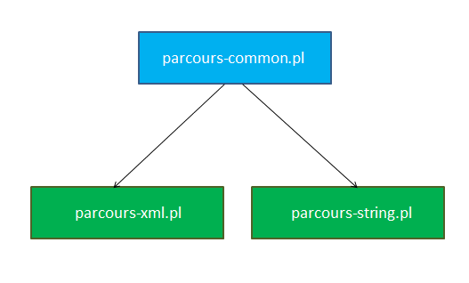
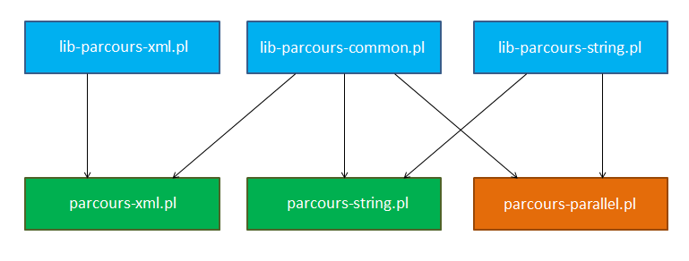
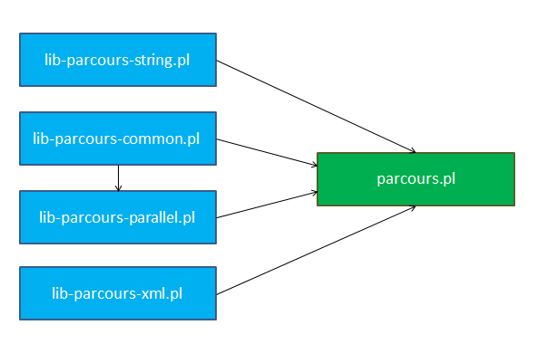

Modularisation du code (partie 2)
Préparation à la parallélisation
Je voulais créer une version parallèle du code, pouvant utiliser les méthodes d'extraction déjà créées. Il fallait donc modifier les fichiers de façon à ce qu'ils puissent être inclus dans les scripts parallèles et séquentiels.
Rappel de l'architecture précédente : 
Les procédures d'extractions définies dans les fichiers parcours-XYZ.pl ont été transférées dans des fichiers lib-parcours-XYZ.pl. Les fichiers parcours-*.pl en eux-mêmes ne contiennent plus qu'un appel à la procédure main de lib-parcours-common.pl.
Le fichiers parcours-parallel.pl se base sur certaines procédures de nettoyage du parcours commun (séquentiel). Il prend en dépendance les fichiers Perl dont on veut pouvoir utiliser les procédures d'extractions (sur l'image, uniquement parcours-string). Il définit une fonction parallel_main, qui est appelée en fin de script avec les arguments adéquats.
Architecture finale
Finalement, cette façon de procéder n'était pas très élégante, puisque les 3 fichiers exécutables devaient gérer les arguments passés en ligne de commande pour faire leur appel à main ou parallel_main.
Le code a donc été réparti de manière à utiliser un point d'entrée unique : parcours.pl. En outre, il centralise les dépendances aux autres bibliothèques. Getopt
Comme le programme gérait de plus en plus de paramètres fournis au lancement, les parser à la main aurait été laborieux. Ainsi, j'ai fait le choix d'utiliser le module Getopt::Long, qui permet d'utiliser des arguments en ligne de commande avec la syntaxe des programmes CLI qui utilisent la bibliothèque C GNU getopt_long.De cette manière, il devient plus facile d'ajouter et de retirer des arguments durant le développement, le code est réduit et il y a plus de cas d'utilisations gérés (syntaxe longue ou courte).
Le dernier changement a été de passer les arguments (en dehors du pointeur de fonction) aux procédures main et parallel_main via une table de hashage passée par référence. De cette manière, la modification des arguments de ces procédures est simplifiée.
Le code
use Getopt::Long; require 'lib-parcours-common.pl'; require 'lib-parcours-string.pl'; require 'lib-parcours-xml.pl'; require 'lib-parcours-parallel.pl'; my $extract_fun = \&extract_tag_content; my $work_dir = ''; # chemin vers le répertoire à analyser my $out_dir = '.'; # chemin vers le répertoire de sortie my $proc = 0; # nombre de processus maximal utilisé my $xml = 0; # utilisation de l'extraction xml my $help = 0; # affichage de l'aide my $help_text = <<END; usage : perl parcours.pl --input_dir=<dossier_entrée> [options] Les options suivantes sont disponibles (longues et courtes) : --xml -x Utilisations de l'extraction xml --output_dir=<dossier> -o Chemin vers le dossier de sortie --proc=N -p Nombre de processus maximal utilisé en parallèle --verbose -v Affichage d'informations verbeux [pas implémenté] --help -h Affichage de ce message d'aide END my $res = GetOptions ('input_dir=s' => \$work_dir, 'output_dir:s' => \$out_dir, 'proc:i' => \$proc, 'xml' => \$xml, 'help' => \$help); # en utilisant une telle structure, on peut rajouter plus facilement des paramètres par la suite my %conf = ( 'work_dir' => $work_dir, 'out_dir' => $out_dir, 'max_proc' => $proc, 'use_xml' => $xml ); if($help == 1) { print $help_text; exit 0; } if($conf{'work_dir'} eq '') { print "Erreur : le répertoire de travail n'est pas fixé.\n"; print $help_text; exit 1; } if($conf{'use_xml'} == 1) { $extract_fun = \&extract_xml; } if($conf{'max_proc'} > 0) { parallel_main(\%conf, $extract_fun); } else { main(\%conf, $extract_fun); }